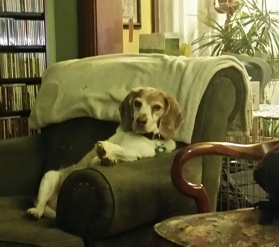

My Dogs
Click here!Manny
Our first dog, Manny. He was pretty like a girl. You couldn't ask for a better first dog. He knew he was a dog, so he did dog things like lay at the foot of the bed, stick his head out the car window, and chase squirrels.
Photograph by Lisa Coon. Manny in Yard, b&w. Author's private collection
Obie
After we lost Manny, we went to the Humane Society to get another dog. The dog I had my eye on wasn't going to work out. They said they had some beagle mixes. I did not want a beagle, but we took a look anyway. When we met Obie, my 6 year old son said "This is the right dog for us. This is the right dog for our family." And that's how Obie came to live with us. He did not do dog things because he knew he was a dog, he just was dog. Obie was 100% instinct.
Photograph by Lisa Coon. The Most Interesting Dog in The World (not). Author's private collection
Lucy
I decided I wanted to try having a puppy. I found Lucy on Craigslist from a family who bred their chocolate lab and pitbull. If I told you she was a lab, you'd totally believe me. We still had Obie when we got Lucy. Obie did not like Lucy, but Lucy loves other dogs, even though she gets attacked often by little dogs. I had no business getting a puppy. She's a good girl though. Just doesn't realize how big she is. I think she's brain damaged because Obie bit her in the head when she was a puppy.
Photograph by Lisa Coon. Lucy in Repose. Author's private collection
Obie & Lucy
Here is a pictoral representation of Lucy's and Obie's relationship.
Photograph by Lisa Coon. I Was Here First. Author's private collection